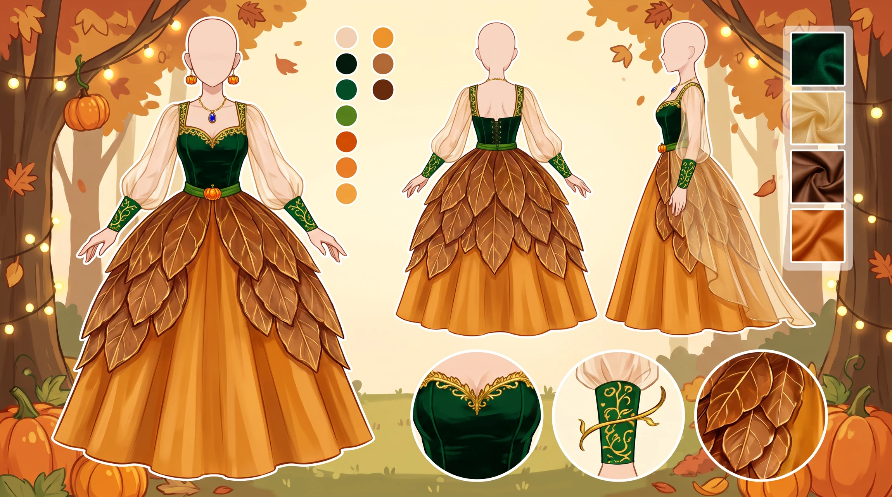
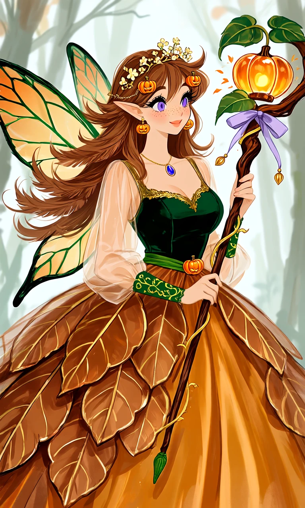

The Pumpkin Grove Gown

Outfit Prompt
A regal autumn fairy gown with a fitted deep forest-green velvet bodice, an open back shaped to leave room for fairy wings, and a soft sweetheart neckline edged in antique gold. Sheer apricot chiffon sleeves gather into narrow green cuffs embroidered with curling pumpkin vines. The floor-length skirt has a full golden-orange satin underskirt beneath overlapping copper and amber organza panels shaped like broad pumpkin leaves, each traced with fine gold veins. A narrow green velvet sash fastens at the waist with a polished amber pumpkin clasp. A delicate crown of curling gold vines and tiny cream pumpkin blossoms meets two small pumpkin hair clips joined by a fine gold chain. Golden pumpkin earrings, an oval amethyst pendant, and forest-green velvet slippers complete the ensemble.
Outfit Examples

